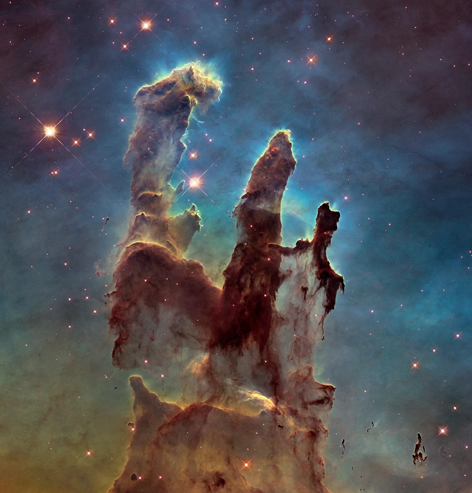

Звездите се образуват като част от удивителен процес на рециклиране, при който гравитацията оформя нови звезди от газа и праха, изхвърлени от старите звезди. Веднъж образувани, масивните млади звезди регулират образуването на звезди с по-малка маса с мощните си ветрове, издухвайки газ и прах от някои области, докато ги компресират в други. Когато звездите се образуват, те са скрити в своите „родителски“ пашкули от прах, през които видимата светлина не може да проникне, но излъчват инфрачервена светлина, която преминава през облаците прах и може да бъде открита от инфрачервени телескопи.
Мъглявината Орел предлага гледка към звездна ясла в множество дължини на вълната, което ни позволява да видим както плътните пашкули от прах, така и звездите, образуващи се вътре. Мъглявината е дом на три дебели колони от прах и газ, където се образуват звезди, известни като Стълбовете на Сътворението. Дори при височина от 5 светлинни години стълбовете са ерозирали от звездни ветрове от млади, горещи звезди и са към края на своята фаза на производство на звезди. Повечето от звездите на мъглявината ги заобикалят, къпейки ги в светеща радиация, която продължава да се откъсва от формата им.